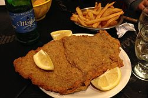

Milanesa

A Classic Argentinian Dish
The milanesa is a South American variation of the Lombard veal Milanese, or the Austrian Wiener schnitzel, where generic types of meat breaded cutlet preparations are known as a milanesa.
Ingredients
- Beef Steaks
- 2 Eggs
- 2 Cups of bread crumbs
- 2 Garlic cloves chopped
- Half a teaspoon of black peppercorns
- Vegetable oil for frying
- Salt for taste
Steps
- Grind the garlic clove and peppercorn in a mortar. If you do not have a mortar, finely chop the garlic and use a pepper grinder for the black peppercorns or ground pepper.
- In a large bowl, whisk the two eggs lightly and add the garlic and peppercorn mixture. I usually add a Tbsp. of water to the mortar after grinding the garlic and peppercorns, that way its easier to add the mix to the eggs. Whisk again.
- In a large dish, spread the bread crumbs mixed with salt (If using regular bread crumbs) and have another dish ready to place the steaks after breading.
- Now, to start the breading process. Dip the steaks into the egg mixture.
- Using kitchen tongs, place one steak into the crumbs, turn to coat both sides. Patting on lightly to make sure the coating adheres to the steak. If necessary, turn steak again to have an even coating of breadcrumbs. Place the already-breaded steak aside on a plate. I use wax paper to cover the plates for an easy clean up afterward. Repeat this step with the remaining steaks.
- Once you finish breading all the steaks you will proceed to fry them. Using a large skillet, heat half an inch of oil over medium-high heat. Make sure the oil is hot before placing the steaks. Fry about 3 minutes on each side until golden brown on both sides and cooked through. Place the steaks on paper towels to drain any excess oil before serving.
- Serve with warm fries and a salad.